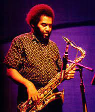
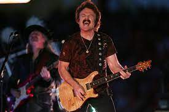
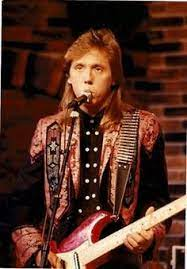
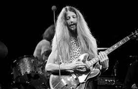

Cornelius Bumpus
---May 7, 1945 – February 3, 2004) was an American woodwind, brass and keyboard player and vocalist from Santa Cruz, California. His role in these bands was primarily as a saxophonist and organist. His most notable touring was with the Doobie Brothers and Steely Dan.[2] Bumpus toured with Steely Dan from 1993 to 2003. In 2002, he worked on the Big Blue Earth project sponsored by the Church of Christ, Scientist.
Tom Johnston
Charles Thomas Johnston is an American musician. He is a guitarist and vocalist, known principally as a founder, guitarist, lead vocalist and songwriter for the rock group The Doobie Brothers, as well as for his own solo career. He has played off and on with The Doobie Brothers for 50 years, in several styles.
John McFee
John McFee is an American singer, songwriter, guitarist, record producer, and multi-instrumentalist, and long-time member of The Doobie Brothers.
Patrick Simmons
Patrick Simmons is an American musician best known as a founding member of the rock band The Doobie Brothers. Born in Aberdeen, Washington, he has been the only consistent member of the band throughout their tenure.